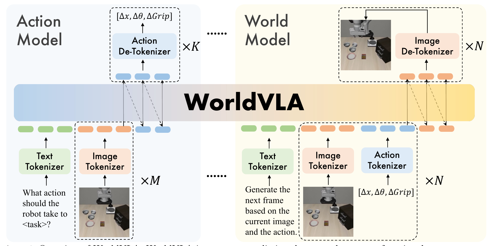

WorldVLA: Towards Autoregressive Action World Model
Cen 等 · 2025 技术报告 · arXiv:2506.21539 · Zotero QQA9GTDS
WorldVLA 基于 Chameleon，把文本、图像和机器人动作都离散成统一词表中的 token；同一自回归骨干既可作为动作模型，也可作为动作条件世界模型，用世界预测辅助策略理解动作后果。
§1 Introduction：VLA 为什么还需要“理解动作会造成什么”
常见 VLA 把动作只当输出：模型看图和语言，然后产生 action，但训练目标并不要求它解释该动作会让世界怎样变化。世界模型恰好相反——它接收动作并预测未来图像，能学习动作后果，却通常不能直接规划下一步控制。两类模型分别缺少另一半能力。
WorldVLA 试图在一个自回归词表和 Transformer 中统一图像、文本与动作 token：world-model 模式用当前图像和动作预测未来图像，action-model 模式用当前图像、文本和世界模型提供的预测知识生成动作。这样动作既是被理解的输入，也是被生成的输出，未来图像既是预测目标，也反过来帮助决策。
展开原文 · 核心主张
“unifies action and image understanding and generation”
§2 Related Work：动作模型、世界模型与自回归统一
OpenVLA、RT-2 等动作模型借助 MLLM 的语义能力，却往往给动作新增离散 token 或专家头；iVideoGPT 等世界模型通过 action-conditioned future prediction 学动力学，但不能直接输出低层动作。GR-1/GR-2 已联合预测未来与动作，不过 WorldVLA 更强调两种任务共享词表、模型和注意力机制，以及两者相互增强。
论文还碰到自回归 action chunk 的特殊错误：后续动作若持续条件于早先生成动作，前段小误差会传遍整个 chunk，而语言模型预训练又几乎没有动作序列经验。作者因此设计 action attention mask，选择性屏蔽先前动作，让 chunk 内各动作更多依据共享视觉—语言上下文，而不是盲目继承错误前缀。
§3 “统一”具体统一了什么
- 统一词表
- 语言、视觉 code 和动作 bin 都进入同一个 Transformer 序列空间。
- 统一骨干
- 动作预测与世界预测共享 Chameleon 参数。
- 不是必然同时输出
- 训练样本按 action/world 两种模式组织；“joint”指联合目标与共享表示，不等于每次前向都同步产生图像和动作。
§4 两种任务，一套 WorldVLA

1. 动作模式读取任务和观测
机器人示范同时提供视觉与动作监督。
输入是什么：已经训练好的模型、它在不同输入或噪声时间步上的运行记录，以及需要比较的中间数值。这里先做诊断，还没有让机器人执行新动作。
这一步究竟做什么：本步骤执行“动作模式读取任务和观测”。具体来说，机器人示范同时提供视觉与动作监督。 它把原本模糊的‘看起来对不对’拆成可重复计算或人工核对的判断，从而让不同模型能在同一标准下比较。
输出到哪里：一组诊断数值、分类结果或评测分数；它告诉后续模块当前结果哪里好、哪里需要修正。这个结果会交给下一步“输出量化动作”继续处理。
为什么不能省略：没有统一诊断或评分，后续模块无法知道哪里出错，也无法公平比较两个模型是否真的进步。
2. 输出量化动作
特殊 mask 让 chunk 内动作可并行建模，降低串行误差。
输入是什么：来自上一步“动作模式读取任务和观测”的产物：一组诊断数值、分类结果或评测分数；它告诉后续模块当前结果哪里好、哪里需要修正。本步骤还会按论文设置读取当前条件、时间步或训练信号。
这一步究竟做什么：本步骤执行“输出量化动作”。具体来说，特殊 mask 让 chunk 内动作可并行建模，降低串行误差。 这个动作会真正改变环境，所以系统还要读取执行后的新观测，检查模型预期与现实之间的差距。
输出到哪里：经过本步骤处理、含义更明确的中间结果。这个结果会交给下一步“世界模式注入历史动作”继续处理。
为什么不能省略：它承担上下两步之间的接口；缺少它，前一步产生的信息无法以正确格式或正确含义传到下一步。
3. 世界模式注入历史动作
动作变成预测未来视觉的因果条件。
输入是什么：来自上一步“输出量化动作”的产物：经过本步骤处理、含义更明确的中间结果。本步骤还会按论文设置读取当前条件、时间步或训练信号。
这一步究竟做什么：本步骤执行“世界模式注入历史动作”。具体来说，动作变成预测未来视觉的因果条件。 模型从相同起点产生候选未来，后续模块再检查这些未来是否符合条件、物理规律或动作需要。
输出到哪里：一个或多个候选未来、动作或轨迹，以及必要的中间状态。这个结果会交给下一步“生成未来图像 token”继续处理。
为什么不能省略：它承担上下两步之间的接口；缺少它，前一步产生的信息无法以正确格式或正确含义传到下一步。
4. 生成未来图像 token
该辅助任务迫使表征包含动作—后果映射。
输入是什么：来自上一步“世界模式注入历史动作”的产物：一个或多个候选未来、动作或轨迹，以及必要的中间状态。本步骤还会按论文设置读取当前条件、时间步或训练信号。
这一步究竟做什么：本步骤执行“生成未来图像 token”。具体来说，该辅助任务迫使表征包含动作—后果映射。 模型从相同起点产生候选未来，后续模块再检查这些未来是否符合条件、物理规律或动作需要。
输出到哪里：一组比原始输入更紧凑的内部特征；它不是最终动作或画面。这是图中这条链路的最终产物，随后会进入真实执行、模型更新或指标评测。
为什么不能省略：模型不能高效地直接在所有原始像素和长序列上推理；这一步把信息压成后续模块能处理、比较和复用的形式。
§5 三类 token 如何进入同一序列
§6 注意力 Mask 与联合损失
- $\mathcal L_{action}$
- 只在 action token 上计算交叉熵，世界模式样本不伪造动作标签。
- $\mathcal L_{world}$
- 只在目标 future-image token 上计算，动作是条件而不是预测目标。
- Action mask
- 当前 chunk 的动作 token 不相互读取，减少动作内自回归依赖；视觉世界路径仍保持因果。
§7 价值、局限与路线位置
§8 实验归因与复现：统一是否真的产生双向增益
最小可信复现清单
- 明确三种模态 tokenizer、共享词表区间与特殊 token 编排。
- 画出 world mode、action mode 的 attention mask，而非只给文字。
- 报告两个任务的采样比例、loss scale 和每模态 token 数。
- 比较完全因果、完全并行动作和论文 selective mask。
- 同时报告未来图像质量、动作 chunk 各步误差和闭环成功率。
WorldVLA 的“统一”要靠双向实验证明：世界预测改善动作、动作条件也改善可控未来；只把 token 拼进同一序列还不够。